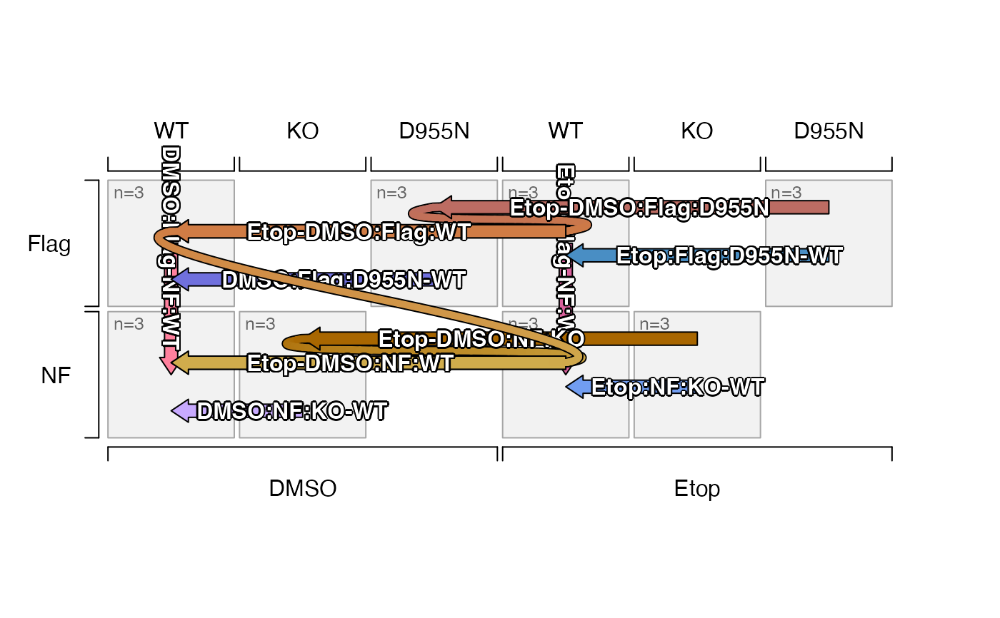
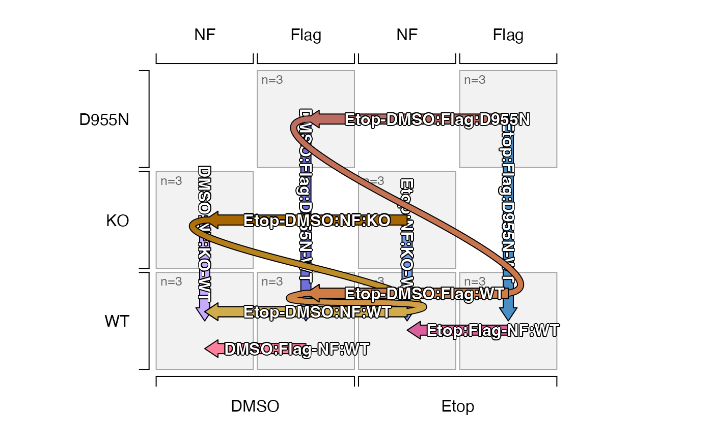
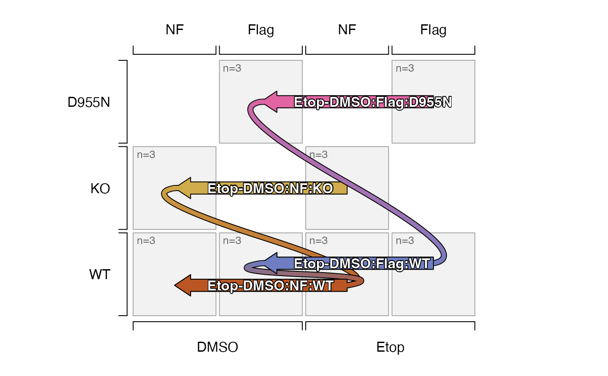
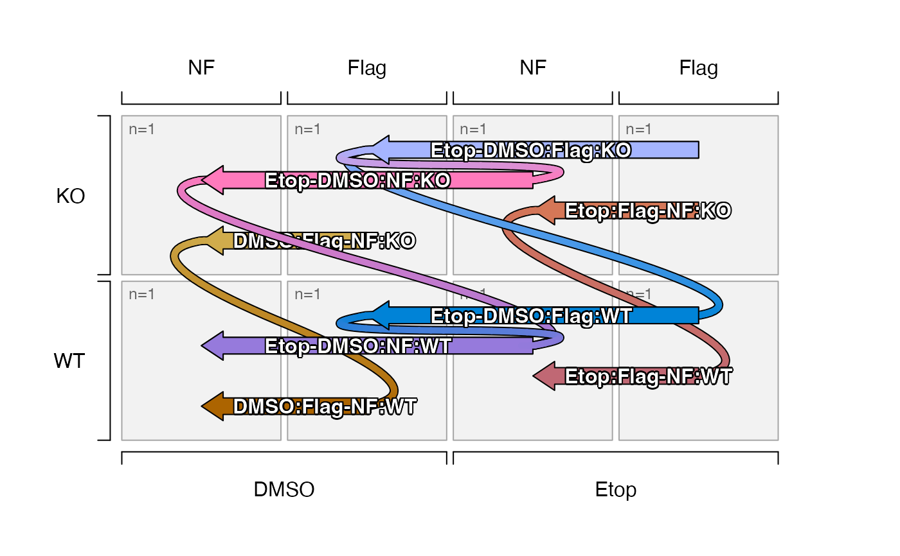

Plot contrasts from sedesign object (in development), showing one-way contrasts as block arrow, and two-way contrasts as two block arrows connected in proper order.
Usage
plot_sedesign(
sedesign,
se = NULL,
factor_names = NULL,
factor_sep = "_",
contrast_sep = "-",
axis1 = NULL,
axis2 = NULL,
axis3 = NULL,
axis4 = NULL,
which_contrasts = NULL,
contrast_style = c("comp", "contrast", "none"),
contrast_labels = NULL,
oneway_position = 0.9,
twoway_position = 0.5,
contrast_position = NULL,
contrast_depths = NULL,
sestats = NULL,
sestats_style = c("label", "number", "simple label"),
assay_names = NULL,
cutoff_names = NULL,
label_cex = 1,
arrow_ex = NULL,
flip_twoway = FALSE,
colorset = NULL,
twoway_lwd = 5,
extend_ex = 0.5,
extend_angle = 10,
bump_factor = 1,
group_buffer = 0.02,
group_border = "grey65",
group_fill = "grey95",
replicate_color = "grey40",
replicate_cex = 0.8,
do_plot = TRUE,
plot_margins = c(0.1, 0.1, 0.1, 0.1),
plot_type = c("base", "grid"),
verbose = FALSE,
debug = FALSE,
...
)Arguments
- sedesign
SEDesignobject as returned bygroups_to_sedesign().- se
SummarizedExperiment(optional) and not yet used by this function. In future this object may be used to assign factor level order to factor values.- factor_names
charactervector equal to the number of delimited values in each group name, recognized in the group names of the design matrix ofsedesignas incolnames(sedesign@design).- factor_sep
characterstring separator between factor values in each group name, typicallyfactor_sep="_".- contrast_sep
characterstring separator between group names in each contrast name, typicallycontrast_sep="-".- axis1, axis2, axis3, axis4
charactervectors which define the factors to represent on each axis, with axes defined in order1=bottom,2=left,3=top,4=right. All factors infactor_namesmust be represented.- which_contrasts
one of the following:
numericindex of contrasts defined insedesign, orcharactervector of values present incontrast_names(sedesign).
When a two-way contrast is defined, its component one-way contrasts are also included.
- contrast_style
characterstring deciding how to format the contrast:"comp": calls contrast2comp()"contrast": uses the contrast as-is"none": hides the contrast label, appendingcontrast_labelswhen provided
- contrast_labels
charactervector of labels named by contrast- oneway_position, twoway_position
numericvalue between 0 and 1, which define the default position of each contrast label for one-way and two-way contrasts, respectively. These values are overridden by optional argumentcontrast_positionwhen supplied.0places the label toward the beginning of the arrow, which also applies right/top justification of text at the start of the arrow.1places the label at the end of the arrow, which also applies left/bottom justification of text at the end of the arrow.
- contrast_position
numericvector named by contrast, whose values position each contrast label given. Default values are defined byoneway_positionandtwoway_position, except where defined bycontrast_position.- contrast_depths
numericwith one or more values used to display only contrasts of the given depth: 1=oneway, 2=twoway. WhenNULLall contrasts are displayed.- sestats
listobject that contains element"hit_array"as produced byse_contrast_stats(), with statistical hits for each contrast, after applying statistical cutoffs. When supplied, statistical hits are included in each contrast label. The three relevant optional values used to specify specific hits:"assay_name": this argument defines the values fromSummarizedExperiment::assays()that were used in the contrasts."cutoff_name": this argument defines a specific cutoff to use, otherwise hits from any applied cutoff are included."contrast_name": this value uses argumentwhich_contrasts
- sestats_style
characterstring indicating how to present the number of hits for each contrast."label": uses the full label: number hits (number up, number down)""number": uses only the number of hits "number""simple label": uses a simple label: "number hits" without the number of hits up and down.
- assay_names, cutoff_names
charactervalues used withsestatsto define the statistical hits to use whensestatsis supplied.- label_cex
numericexpansion factor to adjust contrast label font sizes.- arrow_ex
numeric(default NULL) to adjust arrow width and arrow head size together. WhenNULLit is adjusted starting atarrow_ex=1and reduced proportional to the number of contrast bumps (parallel contrasts that would otherwise overlap). When provided as a numeric value, it is used without adjustment- flip_twoway
logicalindicating whether to flip the orientation of two-way contrasts, for example"(A-B)-(C-D)"would be flipped to equivalent form"(A-C)-(B-D)", which will alter the orientation of the two-way contrast connection. Note that the individual one-way contrasts will be added if they did not already exist in the data.- colorset
charactervector of colors used for one-way contrasts. When the vector contains names, they are assigned tocontrast_names(sedesign), and any missing colors are assigned usingcolorjam::group2colors(). When the vector does not contain names, it is recycled to the number of contrast names.- twoway_lwd
numericline width for two-way contrasts, passed todraw_twoway_contrast().- extend_ex
numericexpansion factor to define control points for two-way contrasts, beyond each one-way contrast by this fraction of the group width in the diagram.- extend_angle
numericangle in degrees to define control points for two-way contrasts, using this angle from the end of each one-way contrast toward the other one-way contrast in the set.When the control point crosses the midpoint between the two contrasts, half the angle is used to re-define control points.
When the control point crosses the other contrast in the set, the first control point is retained, and the second control point uses the opposite angle so the resulting bezier curve from the first contrast "loops around" the far side of the second contrast, then connects from the opposite side.
- bump_factor
numericfactor applied to the relative amount of "bump" used to adjust contrasts which would otherwise overlap on the same x- or y-axis intercept. It can optionally accept two values, applied to the y-axis, then x-axis bump. Values range from 0 (no bump) to 1.5 (expands to full width of each group), with default 1 covering roughly 80% the size of each group box. This value is also adjusted bygroup_buffer.- group_buffer
numericvalue (default 0.02) indicating the relative buffer in between each group square, as a fraction of total width. The range is restricted to minimum 0 (no buffer) to 0.5 (groups are drawn as a point) with recommended values between 0 and 0.1,- group_border, group_fill
charactercolor used for the border and fill colors, respectively, to draw a square for each experimental group defined insedesign. These values can be supplied as a named vector, whose names match the group names defined insedesign, and they will be applied to each group. Any missing groups will used recycled values.- replicate_color
characterstring with R color, used for the label in each group for the number of replicates as defined insedesign.- replicate_cex
numericexpansion factor used to adjust the font size for the replicate label in each group defined bysedesign.- do_plot
logicalindicating whether to render the plot, or whendo_plot=FALSEonly the underlying data is returned.- plot_margins
numericvalue applied topar("mar")around the plot, to define minimal whitespace around the plot.- plot_type
characterstring (experimental) to define one of multiple plot output types:"base"uses base R graphics."grid"(not yet implemented) uses R grid graphics. This option is expected to enable more methods to reduce overlapping labels, and potentially labels with markdown markup.
- verbose
logicalindicating whether to print verbose output.- debug
logicalindicating whether to print very detailed debug output.- ...
additional arguments are ignored.
- contrast
charactercontrast name
Value
invisible list of data.frame representing individual
contrasts to be rendered. Mainly useful for reviewing the
data used to produce the figure.
Details
TODO:
Mostly done: Confirm functionality with different combinations of axis values.
Confirm functionality with only one factor on one axis.
Adjust drawing order:
Group contrasts into sets of two-way contrasts which share any one one-way contrast with each other. This group should be drawn together as a set, to minimize weird effects of overlaps.
Do not draw a one-way contrast independently when it is already being rendered as part of a two-way contrast.
Implement method to assign colors to contrasts.
Simplest option: Allow
color_subwhose names match values incontrast_names(sedesign).Next potential option: Use
color_subto match each group name, then define either solid color fromcolorjam::blend_colors(), or using a color gradient for each one-way block arrow.Two-way connectors use the first contrast end color, and second contrast start color as a gradient.
If colors are not defined per group, call
design2colors()?
DONE. Confirm/implement method to display fewer factors on axes than are present in the underlying group labels.
Improve location of axis labels - currently uses
jamba::groupedAxis()however they appear too distant from the figure itself.Determine method to "recognize" factor order from
colData(se).Simplest option is to use argument
factor_namesto matchcolnames(colData(se))(when supplied) and use that to define factor order.One option is to update
group_to_sedesign()so it stores the factor design data as adata.framewith proper factor level order. This update could also benefitplatjam::design2colors()by informing the necessarycolData()colnames to use.A simpler option is to update
sedesignto includecolnames(colData(se))as acharactervector, without having to store the fulldata.frame. It would requiring passing both thesedesignandseobjects together.Another option is to require
colnames(colData(se))to match the order in the group names defined incolnames(sedesign@design).
DONE. implement block arrows functions for improved quality output.
consider
gridgraphics (packagevwline) orggplot2output.implement sensible method to display a subset of one-way or two-way contrasts. For example, two-way contrasts are easier to see when showing only a subset, perhaps only along one common axis.
Consider implementing gradient colors for block arrows.
This enhancement requires changing block arrow from one polygon to a list of polygons, so each smaller polygon has its own color from the color gradient.
Two-way contrasts:
Handle two-way contrasts for which the one-way contrasts may not also be defined.
Change drawing order so the one-way block arrow label is not overdrawn by the two-way connector.
This step probably requires grouping one-way and two-way contrasts so that for each two-way contrast, each one-way contrast is drawn, then the two-way connector, then the one-way labels.
Probably need helper function
draw_twoway_contrast()which callsdraw_oneway_contrast(),draw_twoway_connector(), anddraw_oneway_label(). The one-way steps can be "skipped".To be "fancy", when a one-way contrast would be rendered multiple times, the rendering should be "skipped" and rendered only the last time, so the label would always be rendered after the incoming two-way connector, and so the one-way contrast (and its label) would only need to be rendered once overall.
See also
Other jam experiment design:
check_sedesign(),
contrast2comp(),
contrast_colors_by_group(),
contrast_names_to_sedesign(),
contrasts_to_factors(),
contrasts_to_venn_setlists(),
draw_oneway_contrast(),
draw_twoway_contrast(),
filter_contrast_names(),
groups_to_sedesign(),
sedesign_to_factors(),
validate_sedesign()
Examples
isamples_1 <- paste0(
rep(c("DMSO", "Etop", "DMSO", "Etop"), each=6),
"_",
rep(c("NF", "Flag"), each=12),
"_",
rep(c("WT", "KO", "WT", "KO", "WT", "D955N", "WT", "D955N"), each=3),
"_",
LETTERS[1:3])
# simple data.frame with group information
idf <- data.frame(jamba::rbindList(strsplit(isamples_1, "_")))[,1:3]
rownames(idf) <- isamples_1;
# convert to sedesign
sedesign_1 <- groups_to_sedesign(idf)
# plot the contrasts
plot_sedesign(sedesign_1)

# re-order the factors along each axis
plot_sedesign(sedesign_1, axis1=1, axis2=3, axis3=2)

# flip the group ordering for two-way contrasts
# (These are mathematically equivalent, but shown in flipped orientation)
plot_sedesign(sedesign_1, axis1=1, axis2=3, axis3=2, flip_twoway=TRUE)
# plot only the two-way contrasts
is_twoway <- grepl("[(]", contrast_names(sedesign_1))
plot_sedesign(sedesign_1, which_contrasts=which(is_twoway),
axis1=1, axis2=3, axis3=2)
#> Warning: no non-missing arguments to max; returning -Inf
#> Warning: no non-missing arguments to max; returning -Inf

group_names <- paste0(
rep(c("DMSO", "Etop"), each=4),
"_",
rep(c("NF", "Flag"), each=2),
"_",
rep(c("WT", "KO"), 4))
sedesign <- groups_to_sedesign(group_names)
plot_sedesign(sedesign)
# plot only the two-way contrasts
is_twoway <- grepl("[(]", contrast_names(sedesign))
plot_sedesign(sedesign, which_contrasts=which(is_twoway),
axis1=1, axis2=3, axis3=2)
#> Warning: no non-missing arguments to max; returning -Inf
#> Warning: no non-missing arguments to max; returning -Inf
